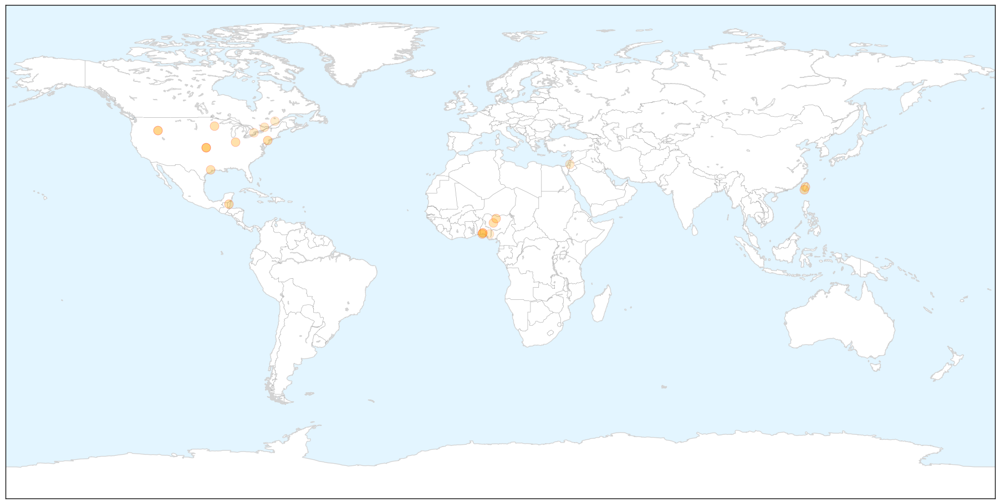

Toggle navigation
Early Warning
Return to Dashboard
Points of Interest
About the Project
Influenza
Jan 22, 2015
Compare to:
-
Dengue Fever
Hemmorhagic Fever
Mold/Fungal Infection
Meningitis
Pertussis / Whooping Cough
Middle East Respiratory Syndrome
Cholera
Hepatitis
Chikungunya
Yellow Fever
Bubonic Plague
West Nile Virus
Swine Flu
Ebola
Measles
Unknown
Mumps
30 Day Trends
Web: 1
alerts
, 0
warnings
Twitter: 0
alerts
, 0
warnings
Top Articles:
0.997
Somerset County Department of Health advise it's not too late to get a flu shot
0.995
Centers for Disease Control (CDC) Caught Inflating Flu Deaths to Sell More Vaccines
0.994
Coeur d'Alene Press: Sholeh Patrick
0.992
Two poultry farms in Spanish Lookout placed under quarantine
0.987
OUR OPINION: What, me worry about the flu? YES
0.976
Avian flu outbreaks in Taiwan trigger human monitoring
0.970
Taiwan bird flu: ‘No bird-to-human transmission of avian influenza has occurred’
0.967
140,810 infected as bird flu resurfaces
0.953
Flu season continues to taper off
0.950
Disease now in 7 Nigerian states, 140,390 birds infected
0.946
Scientists Work To Build Better Flu Vaccine
0.916
Five-year-old girl dies of flu four days after falling ill with 107 fever
0.914
Nigeria and the Avian Influenza
0.810
Avian Influenza Now In 7 States Including Lagos
0.748
FG says bird flu now in seven states
0.688
Today's stories from newspapers in Ottawa
0.652
Today's stories from newspapers in North Bay Nipissing
0.602
Avian Flu Spreads to New Nigerian States
0.601
Today's stories from newspapers in Norfolk County
0.601
Today's stories from newspapers in Norfolk County
0.527
Poultry quarantine set in Canyon County
Top Tweets:
No tweets found for Jan 22, 2015
Web/News Articles
X
Tweets
X
Article Locations
X

Article Confidences
X